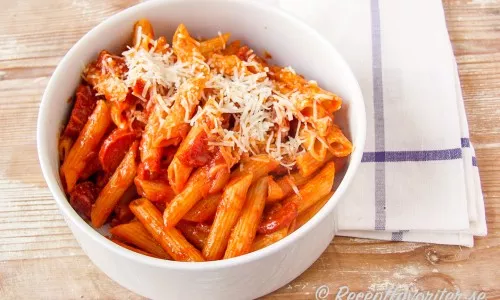

Recipes for falcon sausage with pasta

8 grilled sausages or wieners
- 1 yellow onion
- 4 tbsp olive oil
- 1 cup ketchup
- 1 clove of garlic
- A few drops of tabasco, sriracha or some creamy chili flakes to taste
- 1 tsp salt
- 0.5 krm black pepper
Cooking
- Start by boiling water for the pasta. Start cooking the pasta according to the package.
- Peel and chop yellow onion and garlic (optional).
- Slice the sausage and fry in olive oil in a pan with high edges.
- Add onion and fry gently for a few minutes on a lower heat while the pasta cooks. Add chili flakes if you want it in.
- Drain the spaghetti.
- Mix the spaghetti with the sausage, onion and ketchup in the pan, the pasta pot or a large bowl.
- Spaghetti with sausage or bacon is ready to serve.
- Season with chili such as tabasco or sriracha sauce and salt and black pepper.
Link to the page